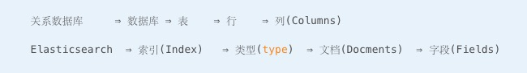
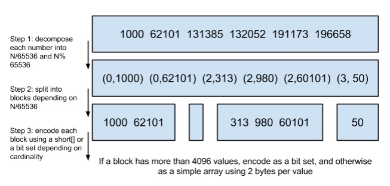

基于Elasticsea构建的实时日志平台
@彭秋源 平台开发 2015.12
ftp：
内网项目： http://10.0.29.111:8080/login
用户名：test3
密码：admin
原始Log：
最初的技术选型：时间序列数据库
容易优化，非常快，有两个弊端：
1、无法快速响应变化；
2、存储膨胀：按省份聚合，按运营商聚合，按点击人的喜好聚合等；
希望时间序列数据库不仅仅可以提供原始数据的查询，而且要支持对原始数据的聚合能力：
1、入库阶段完成的物化视图；
2、查询阶段完成的实时聚合；
要在在查询阶段做数据的聚合和转换，需要能够支持以下三点：
1、用索引检索出行号：能够从上亿条数据中快速过滤出几百万的数据。
2、从主存储按行号加载：能够快速加载这过滤出的几百万条数据到内存里。
3、分布式计算：能够把这些数据按照GROUP BY 和 SELECT 的要求计算出最终的结果集。
三个不同的技术领域：检索（Lucene）、加载（按列组织的磁盘存储结构）、分布式计算（Hadoop和spark）。elasticsearch
Elasticsearch
1、Lucene的inverted index可以比mysql的b-tree检索更快。
2、在 Mysql中给两个字段独立建立的索引无法联合起来使用，必须对联合查询的场景建立复合索引。而lucene可以任何AND或者OR组合使用索引进行检索。
3、Mysql 如果经过索引过滤之后仍然要加载很多行的话，出于效率考虑经常会选择进行全表扫描。
4、Lucene 从 4.0 开始支持 DocValues，极大降低了内存的占用，减少了磁盘上的尺寸并且提高了加载数据到内存计算的吞吐能力。
5、Lucene支持分segment，Elasticsearch支持分index。Elasticsearch可以把分开的数据当成一张表来查询和聚合。相比之下Mysql如果自己做分库分表的时候，联合查询不方便。
6、Elasticsearch 从1.0开始支持aggregation，基本上有了普通SQL的聚合能力强大的多。
问题：
1、Elasticsearch简介？
2、Log数据是如何（收集、处理、转发、解析）的？
3、Elasticsearch是基于什么原理如何做到比mysql更快地查询和聚合时间序列数据的？
4、Elasticsearch是如何在我们游戏项目中使用的？
5、坑&优化
Elasticsearch 是一个分布式可扩展的实时搜索和分析引擎.
Elasticsearch 是一个建立在全文搜索引擎 Apache Lucene(TM) 基础上的搜索引擎. 当然 Elasticsearch 并不仅仅是 Lucene 那么简单，它不仅包括了全文搜索功能，还可以进行以下工作:
1、分布式实时文件存储，并将每一个字段都编入索引，使其可以被搜索。
2、实时分析的分布式搜索引擎。
3、可以扩展到上百台服务器，处理PB级别的结构化或非结构化数据。
Elasticsearch 基础
Elasticsearch的文件存储，是面向文档型数据库，一条数据在这里就是一个文档，用JSON作为文档序列化的格式，比如下面这条用户数据：
用Mysql这样的数据库存储就会容易想到建立一张User表，有balabala的字段等，在Elasticsearch里这就是一个文档，当然这个文档会属于一个User的类型，各种各样的类型存在于一个索引当中。这里有一份简易的将Elasticsearch和关系型数据术语对照表:
一个 Elasticsearch 集群可以包含多个索引(数据库)，也就是说其中包含了很多类型(表)。这些类型中包含了很多的文档(行)，然后每个文档中又包含了很多的字段(列)。
Elasticsearch的交互，可以使用Java API，也可以直接使用HTTP的Restful API方式，比如我们打算插入一条记录，可以简单发送一个HTTP的请求：
在当前的项目中，我们希望ES能承担亿级文档的搜索、存储，并且十分迅速的搜索响应。
1、节点（Node）：节点是一个ES的实例，一般一台主机上部署一个节点
2、集群（Cluster）：集群由若干节点组成，和任意节点的通信等价于和集群的通信
3、分片（Shard）：一个索引会分成多个分片存储，分片数量在索引建立后不可更改
4、副本（Replica）：副本是分片的一个拷贝，目的在于提高系统的容错性和搜索的效率
5、索引（Index）：类似数据库的库
6、类型（Type）：类似数据库的表
7、文档（Document）：类似数据库的行，包含一个或多个Field
8、字段（Field）：搜索的最小单元，可通过Mapping定义不同的属性（比如可否被搜索）

github：https://github.com/medcl/elasticsearch-rtf
select * from tweet where user = 'kimchy';
什么是logstash
1、收集、处理、转发、解析
logstash解决的问题
1、结构化日志内容
2、标准化日志时间
logstash基本概念
Input
1、处理日志源，生产日志event
2、一条event日志，包含多个字段
Codes
1、识别不同的日志格式：json、csv等等
2、标准化日志时间
Filters
1、处理日志
2、抽取、添加、转换、移除field
Outputs
1、输出日志：es、file、email
logs => Input ＝> Filters => Outputs =>elasticsearch
logstash的使用建议
1、Jruby编写不宜调试
2、内置大量的正则计算来识别字段、时间（本质是迭代，正则计算cpu定位高）
3、扩展型强，第三方的插件质量参差不齐
Elasticsearch是基于什么原理如何做到比mysql更快地查询和聚合时间序列数据的？倒排索引和Btree
什么是B-Tree索引?
二叉树查找效率是logN，同时插入新的节点不必移动全部节点，所以用树型结构存储索引，能同时兼顾插入和查询的性能。因此在这个基础上，再结合磁盘的读取特性(顺序读/随机读)，传统关系型数据库采用了B-Tree/B+Tree这样的数据结构：
为了提高查询的效率，减少磁盘寻道次数，将多个值作为一个数组通过连续区间存放，一次寻道读取多个数据，同时也降低树的高度。
什么是倒排索引?
假设有这么几条数据
Posting List：Elasticsearch分别为每个field都建立了一个倒排索引，Kate, John, 24, Female这些叫term，而[1,2]就是Posting List。Posting list就是一个int的数组，存储了所有符合某个term的文档id。通过posting list这种索引方式似乎可以很快进行查找，比如要找age=24的同学，一下就确定是id为1，2的同学。
Term Dictionary：Elasticsearch为了能快速找到某个term，将所有的term排个序，二分法查找term，logN的查找效率，就像通过字典查找一样，这就是Term Dictionary。现在再看起来，似乎和传统数据库通过B-Tree的方式类似啊，为什么说比B-Tree的查询快呢？
Term Index：B-Tree通过减少磁盘寻道次数来提高查询性能，Elasticsearch也是采用同样的思路，直接通过内存查找term，不读磁盘，但是如果term太多，term dictionary也会很大，放内存不现实，于是有了Term Index，就像字典里的索引页一样，A开头的有哪些term，分别在哪页，可以理解term index是一颗树：
Mysql只有term dictionary这一层，是以b-tree排序的方式存储在磁盘上的。检索一个term需要若干次的random access的磁盘操作。而Lucene在term dictionary的基础上添加了term index来加速检索，term index以树的形式缓存在内存中。从term index查到对应的term dictionary的block位置之后，再去磁盘上找term，大大减少了磁盘的random access次数。
这棵树不会包含所有的term，它包含的是term的一些前缀。通过term index可以快速地定位到term dictionary的某个offset，然后从这个位置再往后顺序查找。
所以term index不需要存下所有的term，而仅仅是他们的一些前缀与Term Dictionary的block之间的映射关系，再结合FST(Finite State Transducers)的压缩技术，可以使term index缓存到内存中。从term index查到对应的term dictionary的block位置之后，再去磁盘上找term，大大减少了磁盘随机读的次数。
提问：那个FST是神马东东？FSTs are finite-state machines that map a term (byte sequence) to an arbitrary output.
假设我们现在要将mop, moth, pop, star, stop and top(term index里的term前缀)映射到序号：0，1，2，3，4，5(term dictionary的block位置)。最简单的做法就是定义个Map，大家找到自己的位置对应入座就好了，但从内存占用少的角度想想，有没有更优的办法呢？答案就是：FST
FST以字节的方式存储所有的term，这种压缩方式可以有效的缩减存储空间，使得term index足以放进内存，但这种方式也会导致查找时需要更多的CPU资源。
压缩技巧1：
用FST压缩term index外，对posting list也有压缩技巧。posting list不是已经只存储文档id了吗？还需要压缩？
Frame Of Reference：增量编码压缩，将大数变小数，按字节存储。Elasticsearch要求posting list是有序的(为了提高搜索的性能，再任性的要求也得满足)，这样做的一个好处是方便压缩，如图：
原理就是通过增量，将原来的大数变成小数仅存储增量值，再精打细算按bit排好队，最后通过字节存储，而不是大大咧咧的尽管是2也是用int(4个字节)来存储。
压缩技巧2：
Roaring bitmaps：Bitmap是一种数据结构，假设有某个posting list：[1,3,4,7,10] 对应的bitmap就是： [1,0,1,1,0,0,1,0,0,1]
Bitmap的缺点是存储空间随着文档个数线性增长，Roaring bitmaps用到某些指数特性：将posting list按照65535为界限分块
65535 ： 经典值、2^16-1、2个字节能表示的最大数、一个short的存储单位
4096 ：4096*2bytes ＝ 8192bytes 一次磁盘io的最小单位量
（数据排序和聚合）Field Data cache 和 Docvalues

右边是倒排索引，第一列示某一列的所有的不同值，第三列示含有这个词的文档id列表。排序和aggregation计算的时候，无法直接食用倒排表计算，需要将其反转一下，编程左边的是按照文档序的列示格式。并且右边的倒排表里的term都是string类型，因此还有一个类型的转换。field data cache缓存的就是左边这种数据结构，对于大的索引，这个计算过程很耗时间。如果使用docvalues，则不需要再查询时按需构造这个数据结构，而是在索引时就在磁盘上构造好的，计算时直接从磁盘上读取这种列示数据结构。
如果设置了doc values，左边的列式存储结构是在indexing time就已经构造好的。 搜索和排序的时候不用按需去生成，直接可以使用。
如何利用 ES 计算用户留存率：pipeline aggregation
目前我想到的比较容易达成的做法，是我们在记录用户登录操作日志的时候，把该用户的注册时间也同期输出。首先，创建mapping

那么实际记录的日志会类似这样：表示 uid 为 1 的用户，23 号注册并登录，24 号再次登录；uid 为 2 的用户，23 号注册并登录，24 号无登录
如何利用 ES 计算用户留存率：pipeline aggregation
目前我想到的比较容易达成的做法，是我们在记录用户登录操作日志的时候，把该用户的注册时间也同期输出。首先，创建mapping
那么实际记录的日志会类似这样：表示 uid 为 1 的用户，23 号注册并登录，24 号再次登录；uid 为 2 的用户，23 号注册并登录，24 号无登录
使用pipeline aggregation 计算用户留存：
留存结果：
总结：Elasticsearch的索引思路
将磁盘里的东西尽量搬进内存，减少磁盘随机读取次数(同时也利用磁盘顺序读特性)，结合各种奇技淫巧的压缩算法，用及其苛刻的态度使用内存。所以，对于使用Elasticsearch进行索引时需要注意:
不需要索引的字段，一定要明确定义出来，因为默认是自动建索引的
同样的道理，对于String类型的字段，不需要analysis的也需要明确定义出来，因为默认也是会analysis的
坑&优化
该给ES分配多少内存？JVM参数如何优化?为何我的Heap占用这么高？为何经常有某个field的数据量超出内存限制的异常？为何感觉上没多少数据，也会经常Out Of Memory？